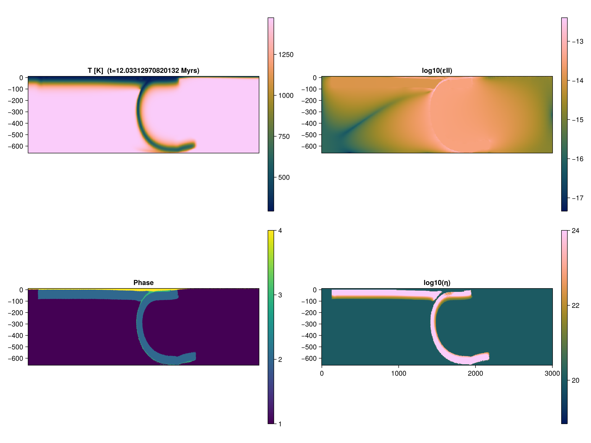

2D subduction
Model setups taken from Hummel et al 2024.
Model setup
We will use GeophysicalModelGenerator.jl to generate the initial geometry, material phases, and thermal field of our models.
Initialize packages
Load JustRelax necessary modules and define backend.
using CUDA # comment this out if you are not using CUDA; or load AMDGPU.jl if you are using an AMD GPU
using JustRelax, JustRelax.JustRelax2D, JustRelax.DataIO
const backend_JR = CUDABackend # Options: CPUBackend, CUDABackend, AMDGPUBackendFor this benchmark we will use particles to track the advection of the material phases and their information. For this, we will use JustPIC.jl
using JustPIC, JustPIC._2D
const backend = CUDABackend # Options: JustPIC.CPUBackend, CUDABackend, JustPIC.AMDGPUBackendWe will also use ParallelStencil.jl to write some device-agnostic helper functions:
using ParallelStencil
@init_parallel_stencil(CUDA, Float64, 2)Helper function
We first define a helper function that will be useful later on
function copyinn_x!(A, B)
@parallel function f_x(A, B)
@all(A) = @inn_x(B)
return nothing
end
@parallel f_x(A, B)
endScript
Model domain
nx, ny = 256, 128 # number of cells in x and y directions
ni = nx, ny
di = @. li / ni # grid steps
grid = Geometry(ni, li; origin = origin)
(; xci, xvi) = grid # nodes at the center and vertices of the cellsPhysical properties using GeoParams
For the rheology we will use the rheology object we created in the previous section.
Initialize particles
nxcell = 40 # initial number of particles per cell
max_xcell = 60 # maximum number of particles per cell
min_xcell = 20 # minimum number of particles per cell
particles = init_particles(
backend, nxcell, max_xcell, min_xcell, xvi...
)
)
subgrid_arrays = SubgridDiffusionCellArrays(particles)
# velocity staggered grids
grid_vxi = velocity_grids(xci, xvi, di)We will like to advect two fields, the temperature pT and the material phases of each particle pPhases. We will initialize these fields as CellArray objects:
pPhases, pT = init_cell_arrays(particles, Val(2))
particle_args = (pT, pPhases)Assign particles phases anomaly
Now we assign the material phases from the arrays we computed with help of GeophysicalModelGenerator.jl
phases_device = PTArray(backend)(phases_GMG)
phase_ratios = PhaseRatio(backend, ni, length(rheology))
init_phases!(pPhases, phases_device, particles, xvi)
phase_ratios_center!(phase_ratios, particles, grid, pPhases)Temperature profile
We need to copy the thermal field from the GeophysicalModelGenerator.jl object to the thermal that contains all the arrays related to the thermal field.
Ttop = 20 + 273
Tbot = maximum(T_GMG)
thermal = ThermalArrays(backend, ni)
@views thermal.T[2:end-1, :] .= PTArray(backend)(T_GMG)
thermal_bc = TemperatureBoundaryConditions(;
no_flux = (left = true, right = true, top = false, bot = false),
)
thermal_bcs!(thermal, thermal_bc)
@views thermal.T[:, end] .= Ttop
@views thermal.T[:, 1] .= Tbot
temperature2center!(thermal)Stokes arrays
Stokes arrays object
stokes = StokesArrays(backend, ni)
pt_stokes = PTStokesCoeffs(li, di; ϵ=1e-4, Re=3π, r=1e0, CFL = 1 / √2.1) # Re=3π, r=0.7Buoyancy forces and lithostatic pressure
ρg = ntuple(_ -> @zeros(ni...), Val(2))
compute_ρg!(ρg[2], phase_ratios, rheology_augmented, (T=thermal.Tc, P=stokes.P))
stokes.P .= PTArray(backend)(reverse(cumsum(reverse((ρg[2]).* di[2], dims=2), dims=2), dims=2))Viscosity
args0 = (T=thermal.Tc, P=stokes.P, dt = Inf)
viscosity_cutoff = (1e17, 1e24)
compute_viscosity!(stokes, phase_ratios, args0, rheology, viscosity_cutoff)Boundary conditions
We we will use free slip boundary conditions on all sides
# Boundary conditions
flow_bcs = VelocityBoundaryConditions(;
free_slip = (left = true , right = true , top = true , bot = true),
)Pseuo-transient coefficients
pt_thermal = PTThermalCoeffs(
backend, rheology_augmented, phase_ratios, args0, dt, ni, di, li; ϵ=1e-5, CFL=1e-3 / √3
)Just before solving the problem...
Because we have ghost nodes on the thermal field thermal.T, we need to copy the thermal field to a buffer array without those ghost nodes, and interpolate the temperature to the particles. This is because JustPIC.jl does not support ghost nodes yet.
T_buffer = @zeros(ni.+1)
Told_buffer = similar(T_buffer)
dt₀ = similar(stokes.P)
for (dst, src) in zip((T_buffer, Told_buffer), (thermal.T, thermal.Told))
copyinn_x!(dst, src)
end
grid2particle!(pT, xvi, T_buffer, particles)Advancing one time step
- Interpolate fields from particle to grid vertices
particle2grid!(T_buffer, pT, xvi, particles)
@views T_buffer[:, end] .= Ttop
@views T_buffer[:, 1] .= Tbot
@views thermal.T[2:end-1, :] .= T_buffer
thermal_bcs!(thermal, thermal_bc)
temperature2center!(thermal)- Solve stokes
t_stokes = @elapsed begin
out = solve!(
stokes,
pt_stokes,
di,
flow_bcs,
ρg,
phase_ratios,
rheology_augmented,
args,
dt,
igg;
kwargs = (
iterMax = 150e3,
nout = 1e3,
viscosity_cutoff = viscosity_cutoff,
free_surface = false,
viscosity_relaxation = 1e-2
)
);
end
println("Stokes solver time ")
println(" Total time: $t_stokes s")
println(" Time/iteration: $(t_stokes / out.iter) s")- Update time step
dt = compute_dt(stokes, di) * 0.8- Thermal solver and subgrid diffusion
heatdiffusion_PT!(
thermal,
pt_thermal,
thermal_bc,
rheology_augmented,
args,
dt,
di;
kwargs = (
igg = igg,
phase = phase_ratios,
iterMax = 50e3,
nout = 1e2,
verbose = true,
)
)
subgrid_characteristic_time!(
subgrid_arrays, particles, dt₀, phase_ratios, rheology_augmented, thermal, stokes, xci, di
)
centroid2particle!(subgrid_arrays.dt₀, xci, dt₀, particles)
subgrid_diffusion!(
pT, thermal.T, thermal.ΔT, subgrid_arrays, particles, xvi, di, dt
)- Particles advection
# advect particles in space
advection!(particles, RungeKutta2(), @velocity(stokes), grid_vxi, dt)
# advect particles in memory
move_particles!(particles, xvi, particle_args)
# check if we need to inject particles
inject_particles_phase!(particles, pPhases, (pT, ), (T_buffer, ), xvi)
# update phase ratios
phase_ratios_center!(phase_ratios, particles, grid, pPhases)- Optional: Save data as VTK to visualize it later with ParaView
Vx_v = @zeros(ni.+1...)
Vy_v = @zeros(ni.+1...)
velocity2vertex!(Vx_v, Vy_v, @velocity(stokes)...) # interpolate velocity from staggered grid to vertices
data_v = (; # data @ vertices
T = Array(T_buffer),
τII = Array(stokes.τ.II),
εII = Array(stokes.ε.II),
Vx = Array(Vx_v),
Vy = Array(Vy_v),
)
data_c = (; # data @ centers
P = Array(stokes.P),
η = Array(stokes.viscosity.η_vep),
)
velocity_v = ( # velocity vector field
Array(Vx_v),
Array(Vy_v),
)
save_vtk(
joinpath(@__DIR__, "vtk_" * lpad("$it", 6, "0")),
xvi,
xci,
data_v,
data_c,
velocity_v
)Final model
Solution after 990 time steps 